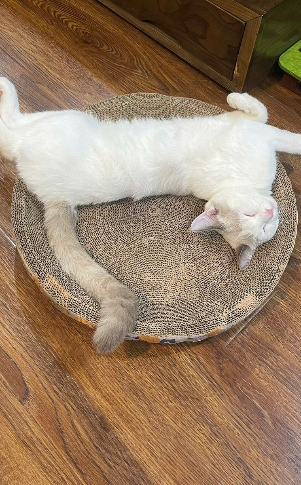

Vũ trụ của âm nhạc & những ước mơ.
Xin chào, mình là Quỳnh Hương.
Sinh viên Sư phạm Âm nhạc, mong muốn trở thành một giáo viên âm nhạc sáng tạo và tận tâm — người đưa âm nhạc đến gần hơn với học trò.
Xin chào, mình là Đinh Thị Quỳnh Hương
Ngoài giờ học, mình thích chơi với mèo, đi du lịch và đi concert nghe nhạc — những điều giúp mình nạp lại năng lượng và tìm thêm cảm hứng cho âm nhạc.
Vũ trụ nhỏ của mình
Ba điều nhỏ bé giúp mình nạp năng lượng và tìm cảm hứng cho âm nhạc.

Chơi với mèo
Bạn nhỏ bốn chân luôn chờ mình ở nhà.
Đi du lịch
Mây, núi và ruộng bậc thang trong chuyến đi Sa Pa.
Đi concert
Nơi mình được hòa mình vào âm nhạc cùng khán giả.
Mục tiêu học tập & định hướng phát triển
Từ việc học hôm nay đến công việc mơ ước ngày mai.
- 01
Học hỏi
Không ngừng học hỏi, mở rộng hiểu biết với những điều mới mỗi ngày.
- 02
Chuyên môn
Nắm vững kiến thức âm nhạc chuyên sâu và phương pháp giảng dạy âm nhạc.
- 03
Kỹ năng
Rèn luyện kỹ năng sư phạm cùng các kỹ năng bổ trợ, trong đó có kỹ năng số.
- 04
Nghề nghiệp
Trở thành giáo viên Âm nhạc sáng tạo, tận tâm tại trường học hoặc trung tâm nghệ thuật.
- Ước mơ xa hơn
Trung tâm âm nhạc của riêng mình
Khởi nghiệp, mở một trung tâm giảng dạy âm nhạc của riêng mình.
Mục tiêu của Portfolio
Portfolio nối câu chuyện của mình với những bài tập thực hành của học phần — và là bước đầu cho hồ sơ nghề nghiệp sau này.
Mọi công cụ AI được dùng đều ghi rõ mục đích ở từng bài và tại trang Tổng kết.
Hồ sơ năng lực số
Trình bày lại 6 bài tập của 6 chương, cho thấy cả sản phẩm cuối cùng lẫn quá trình làm ra nó.
Bước đầu của hồ sơ dạy học
Tập quản lý tư liệu khoa học — nền tảng để lưu giáo án, bản nhạc, video thị phạm sau này.
Lưu trữ và chia sẻ
Gom tệp PDF, hình ảnh, video và liên kết về một nơi, công khai và dễ gửi cho thầy cô, bạn bè.
Nền móng thương hiệu cá nhân
Giới thiệu năng lực với nhà trường, phụ huynh và học viên — hữu ích khi mở trung tâm âm nhạc.
Sáu chòm sao tri thức
Mỗi bài tập là một chòm sao trong hành trình học kỹ năng số — đủ mục tiêu, quá trình thực hiện và sản phẩm cuối cùng.
Thao tác cơ bản với tệp tin và thư mục
Cấu trúc thư mục tối ưu và quy tắc đặt tên tệp cho tư liệu học tập, kèm ảnh minh họa.
Khám pháTìm kiếm và đánh giá thông tin học thuật
Tìm kiếm học thuật bằng toán tử nâng cao và bảng đánh giá độ tin cậy của nguồn tin.
Khám pháViết Prompt hiệu quả cho các tác vụ học tập
So sánh Prompt ban đầu với Prompt cải tiến và kết quả đầu ra tương ứng từ AI.
Khám pháSử dụng công cụ hợp tác trực tuyến cho dự án nhóm
Minh chứng dùng công cụ quản lý dự án nhóm và cách các thành viên phối hợp trực tuyến.
Khám pháSử dụng AI tạo sinh để hỗ trợ sáng tạo nội dung
Sản phẩm nội dung số hoàn thiện, tạo ra với sự hỗ trợ của AI tạo sinh và ghi rõ phần AI.
Khám pháSử dụng AI có trách nhiệm trong học tập và nghiên cứu
Bộ nguyên tắc cá nhân về sử dụng AI có trách nhiệm, dựa trên những gì đã tìm hiểu.
Khám phá